このサイトは、スマホで「1回のスワイプで1ページ」進む作りです。1ページの高さは画面1枚分に決まっているため、文字を増やしすぎると、はみ出したり、ほかの文や写真に被ったりします。
ご自身で直してよいのは「目印」がついている所だけです。直せるのは次の2つです（目印は文言 68 か所・画像 9 種類）。
目印は、index.html というファイルの中に、次のような一行で入っています。
✏️E＋数字が文言、🖼I＋数字が画像の番号です。目印のすぐ下にあるものが、その番号の直す対象です。番号はこのマニュアルの画面や表にも同じものが出ています。目印は画面には出ません（見た目は目印を入れる前と同じです）。
作業の前に、必ず控えを取ってください。
index.html と assets フォルダが入っているフォルダ）を、まるごとコピーします（Macは右クリック→「複製」、Windowsはコピーして貼り付け）。用意するもの
< と > で囲まれた部分（タグ）は、そのままにしてください。
上の例は、E13（1Pの本文1）です。「上品な足場屋」の周りの <span class="slogan"> は、文字に下線を引いて強調する部品なので、消さずに残します。
index.html をブラウザにドラッグすると表示されます。直したページまでスワイプ（PCはスクロール）して、文が最後まで出ること、画面の下で切れていないこと、ほかの文や写真に被っていないことを見ます。くわしくは「6．直した後の確認」へ。目印と一覧表には、文字数の目安を書いてあります。文字数は、全角の1文字を1字と数えます。「、」「。」「 」も1字、半角の英数字も1字として数えます（半角のほうが幅が狭いので、安全側です）。
| 表示 | 意味 |
|---|---|
| 現状○字→安全△字 | △字までなら、行が増えず、見た目がほとんど変わりません。迷ったらこの数字までにしてください。 |
| （限界□字） | その行だけを伸ばして、折り返しで行が増えても、ギリギリ被らなかった・はみ出さなかった字数です。ほかの行も一緒に伸ばすと被ることがあります。 |
| 現状○字→△字まで | △字までは行が増えず、それを超えると被る・はみ出す所です（安全と限界が同じ）。 |
| 現状○字のまま | これ以上は増やせません（余裕がない所です）。 |
| 被る心配なし | 今の文字数＋60字まで伸ばしても被らないことを確認した所です。ただし行が増えると見た目は変わるので、「安全」の数字を目安にしてください。 |
この数字は、スマホ（360×640、390×540）とPC（1280×720）の3つの画面の大きさで、実際に表示して、1字ずつ足して測りました（3つのうち、いちばん厳しい数字です）。ほかの大きさの画面では少し変わることがあります。PC表示だけに出る所はPC（1280×720）で測りました。画面に出ない設定（タブ名など）の字数は、一般的な目安で、実測ではありません。
<span class="ln">〜</span> で1行ごとに区切ってあります。この区切り（行）の数は増やしたり減らしたりしないでください。行が増えると、画面の高さが足りなくなります。<wbr> を入れた所でだけ改行されます。言葉の途中で折れないようにするための印です。文を足したときは、文節の区切り（「〜を」「〜の」「、」の後ろなど）に <wbr> を入れてください。入れないと、長い文が折り返せず、画面の右にはみ出すことがあります。<span class="nb">〜</span> は「この中では改行しない」という印です（番地・電話番号・強調の言葉など）。中の文字は直してよいですが、囲みは残してください。<br> を入れます。ただし改行すると高さが増えるので、必ず「6．直した後の確認」を行ってください。& を書きたいときは & と書きます。< や > を文字として書くことはできません。画像は、同じファイル名・同じ縦横比・同じ形式で、上書きするのがいちばん簡単で安全です。目印の文を書き換える必要はありません。
index.html で「🖼I07」を検索します。目印の中に、ファイル名（例：assets/greet.jpg）、縦横比、大きさが書いてあります。squoosh.app）が使えます。写真を画面にドラッグし、右側の形式で「MozJPEG」を選び、品質を75〜80くらいにして、「リサイズ」で元と同じ大きさ（幅×高さ）にそろえ、右下のダウンロードを押します。（ツールの画面は変わることがあります。表示が違うときは担当者にご相談ください。）greet.jpg のように元と同じにして、assets フォルダに入れ、「置き換える」を選びます。上書きの前に、控えを取ってあることを確かめてください。知っておくと安心なこと
index.html の画像のファイル名の後ろの ?v=20261113a のような文字は、スマホが古い画像を使い続けないための印です。公開のときに担当者が新しくします。消さないでください。assets フォルダには、今のページで使っていないファイル（stars.png・stars-twinkle.png・logo-white.svg・favicon.svg・favicon-src.svg）も入っています。差し替えても画面は変わりません。site-icon.png は WordPress のサイトアイコン用です。画面のオレンジの番号が文言、青い番号が画像です。画面と同じ番号が、その下の表にあります。スマホ表示の画面で、390×664 の大きさです（ページ共通だけPCの 1280×720）。
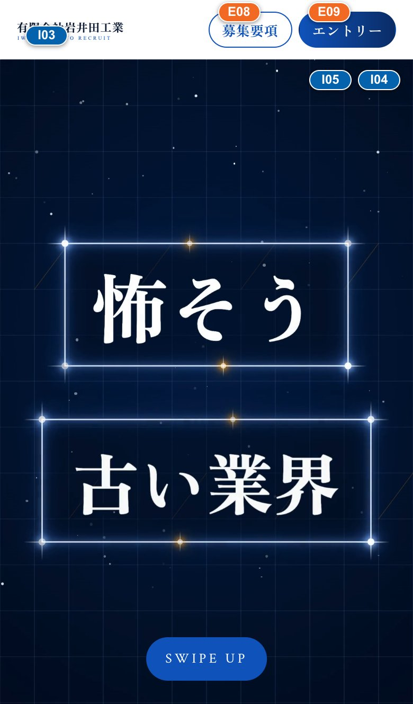
| 番号 | 場所 | 今の文言（冒頭） | 文字数の目安 |
|---|---|---|---|
| E10 | ページの題名(画面には出ない・読み上げと検索用) | 有限会社岩井田工業 鳶職人 採用サイ… | 現状19字｜画面には出ないので字数の制限なし。ただし長すぎない一文に |
| 番号 | 場所 | ファイル | 縦横比・サイズ |
|---|---|---|---|
| I04 | 背景動画(最初の画面) | assets/hero.mp4 | 動画 MP4(H.264)・縦長9:16・1080×1920px・約25秒・音なし・容量5.3MB動画の中の文字(Be Elegant. など)は動画に焼き込まれている。動画の作り直しは担当者に相談 |
| I05 | 動画が始まる前に出る写真 | assets/hero-poster.jpg | 縦長9:16・1080×1920px・JPG・容量334KB動画の最初の1コマと同じ絵にする |
TOP の画面の文字（Be Elegant. など）は動画の中に描かれた絵で、index.html では直せません。動画の作り直しは担当者にご相談ください。上の帯（ロゴと2つのボタン）は「ページ共通」の表にあります。
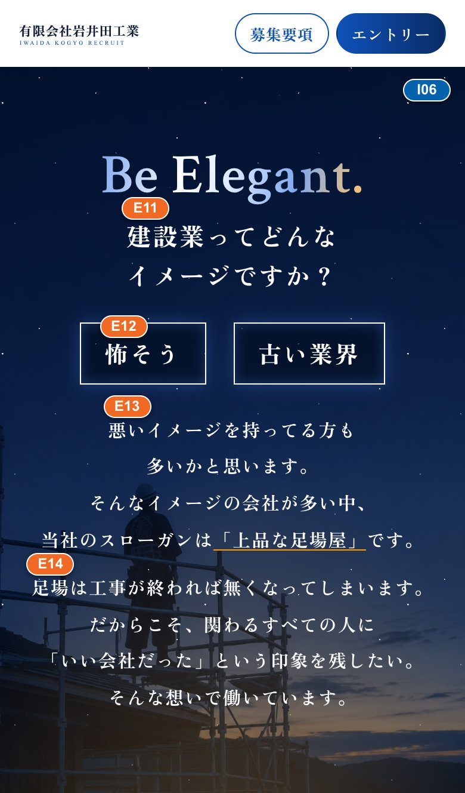
| 番号 | 場所 | 今の文言（冒頭） | 文字数の目安 |
|---|---|---|---|
| E11 | 見出し(問いかけ)文を足したら区切りに<wbr> | 建設業ってどんなイメージですか？ | 現状16字→安全18字(被る心配なし・+60字まで確認) |
| E12 | 四角で囲んだ2つの言葉囲み(class="fv__voice")の数は変えない | 怖そう／古い業界 | 1つめ：現状3字→安全6字(限界24字) 2つめ：現状4字→安全7字(限界28字) |
| E13 | 本文1行の数は変えない・行の中で改行したい時は<br>・文を足したら区切りに<wbr>「上品な足場屋」の囲み(class="slogan")は残す | 悪いイメージを持ってる方も多いかと思… | 1行め：現状22字→安全24字(被る心配なし・+60字まで確認) 2行め：現状15字→安全21字(被る心配なし・+60字まで確認) 3行め：現状20字→安全21字(被る心配なし・+60字まで確認) |
| E14 | 本文2行の数は変えない・行の中で改行したい時は<br>・文を足したら区切りに<wbr> | 足場は工事が終われば無くなってしまい… | 1行め：現状21字(安全はこのまま・被る心配なし・+60字まで確認) 2行め：現状35字→安全36字(被る心配なし・+60字まで確認) 3行め：現状13字→安全21字(被る心配なし・+60字まで確認) |
| 番号 | 場所 | ファイル | 縦横比・サイズ |
|---|---|---|---|
| I06 | 背景の写真(夜明けの足場) | assets/fv.jpg | 縦長2:3・1024×1536px(元と同じ)・JPG・容量79KB画面いっぱいに敷き、枠に合わせて自動で切り取られる。上に白い文字が載るので暗めの写真に同じファイルが会社概要でも使われている(1回の差し替えで全部変わる) |
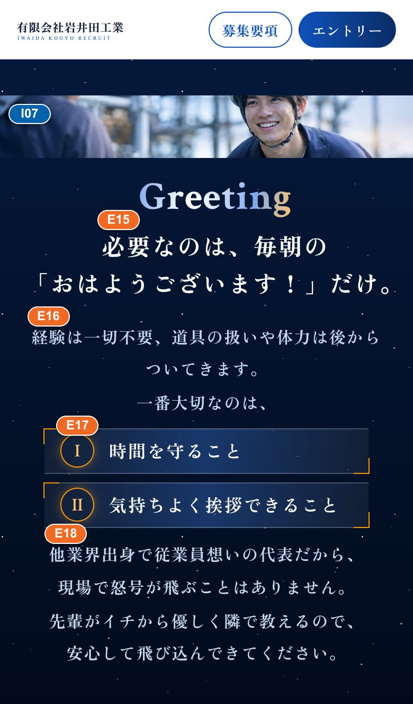
| 番号 | 場所 | 今の文言（冒頭） | 文字数の目安 |
|---|---|---|---|
| E15 | 見出し文を足したら区切りに<wbr> | 必要なのは、毎朝の「おはようございま… | 現状24字(安全はこのまま・限界43字) |
| E16 | 本文1行の数は変えない・行の中で改行したい時は<br>・文を足したら区切りに<wbr> | 経験は一切不要、道具の扱いや体力は後… | 1行め：現状27字→安全29字(限界68字) 2行め：現状8字→安全20字(限界48字) |
| E17 | 2つの約束(I・II の札)札の数字(I・II)と、読み上げ用の「・」(class="vh")は残す | 時間を守ること／気持ちよく挨拶できる… | 1つめ：現状7字→安全13字(限界34字) 2つめ：現状12字→安全13字(限界34字) |
| E18 | 本文2行の数は変えない・行の中で改行したい時は<br>・文を足したら区切りに<wbr> | 他業界出身で従業員想いの代表だから、… | 1行め：現状35字→安全38字(限界66字) 2行め：現状34字→安全38字(限界66字) |
| 番号 | 場所 | ファイル | 縦横比・サイズ |
|---|---|---|---|
| I07 | 写真(上の横長の帯) | assets/greet.jpg | 横長3:2・1200×800px(元と同じ)・JPG・容量95KBこの場所の枠は横長の帯・写真は枠に合わせて中央が自動で切り取られる(人物は真ん中に) |
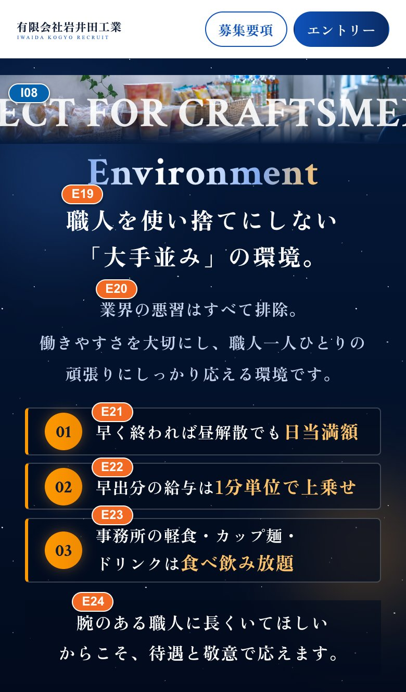
| 番号 | 場所 | 今の文言（冒頭） | 文字数の目安 |
|---|---|---|---|
| E19 | 見出し文を足したら区切りに<wbr> | 職人を使い捨てにしない「大手並み」の… | 現状21字→安全25字(限界28字) |
| E20 | 本文行の数は変えない・行の中で改行したい時は<br>・文を足したら区切りに<wbr> | 業界の悪習はすべて排除。／働きやすさ… | 1行め：現状12字→安全20字(限界24字) 2行め：現状35字→安全39字(限界47字) |
| E21 | 待遇1(01)番号(01)は変えない金色の強調(class="perk__em")の囲みは残す | 早く終われば昼解散でも日当満額 | 現状15字(安全はこのまま・限界39字) |
| E22 | 待遇2(02)番号(02)は変えない金色の強調の囲みは残す | 早出分の給与は1分単位で上乗せ | 現状15字(安全はこのまま・限界39字) |
| E23 | 待遇3(03)番号(03)は変えない金色の強調の囲みは残す | 事務所の軽食・カップ麺・ドリンクは食… | 現状23字→安全24字(限界36字) |
| E24 | 結びの一文文を足したら区切りに<wbr> | 腕のある職人に長くいてほしいからこそ… | 現状30字→安全32字(限界41字) |
| 番号 | 場所 | ファイル | 縦横比・サイズ |
|---|---|---|---|
| I08 | 写真(上の横長の帯・英字が流れる) | assets/lounge.jpg | 横長3:2・1200×800px(元と同じ)・JPG・容量145KBこの場所の枠は横長の帯・写真は枠に合わせて中央が自動で切り取られる |
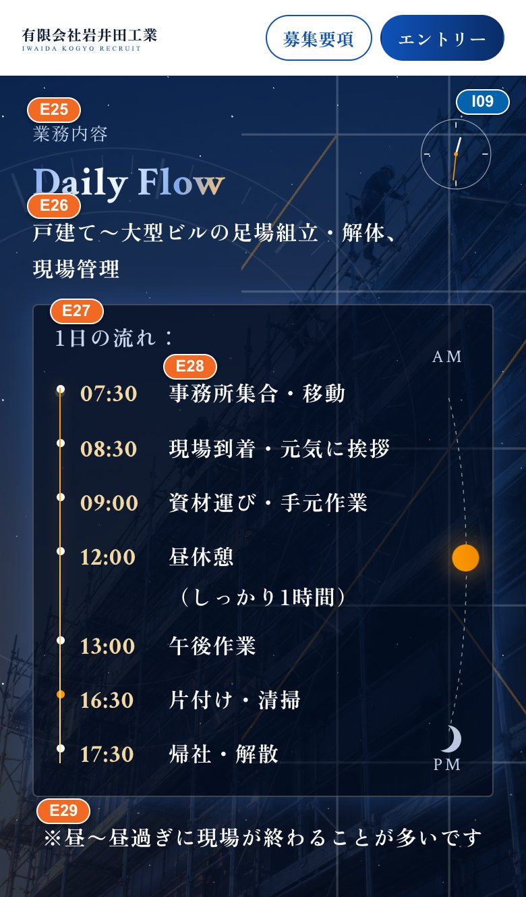
| 番号 | 場所 | 今の文言（冒頭） | 文字数の目安 |
|---|---|---|---|
| E25 | 小見出し「業務内容」 | 業務内容 | 現状4字→安全17字(限界60字) |
| E26 | 仕事の内容(大きな文)文を足したら区切りに<wbr> | 戸建て〜大型ビルの足場組立・解体、現… | 現状21字→安全25字(被る心配なし・+60字まで確認) |
| E27 | 「1日の流れ：」 | 1日の流れ： | 現状6字→16字まで |
| E28 | 1日の流れ(時刻と内容 7行)時刻(class="flow__t")は「07:30」の形(半角5字)のまま。行(class="flow__row")は増やさない(7行で画面がいっぱい) | 事務所集合・移動／現場到着・元気に挨… | 07:30の行：現状8字→安全10字(限界40字) 08:30の行：現状10字(安全はこのまま・限界38字) 09:00の行：現状9字→安全10字(限界40字) 12:00の行：現状12字→安全14字(限界34字) 13:00の行：現状4字→安全10字(限界40字) 16:30の行：現状6字→安全10字(限界40字) 17:30の行：現状5字→安全10字(限界40字) |
| E29 | 下の注意書き(※)文を足したら区切りに<wbr> | ※昼〜昼過ぎに現場が終わることが多い… | 現状20字(安全はこのまま・限界50字) |
| 番号 | 場所 | ファイル | 縦横比・サイズ |
|---|---|---|---|
| I09 | 背景の写真(足場) | assets/scaffold.jpg | 縦長2:3・1024×1536px(元と同じ)・JPG・容量252KB暗く敷いて使う。枠に合わせて自動で切り取られる |
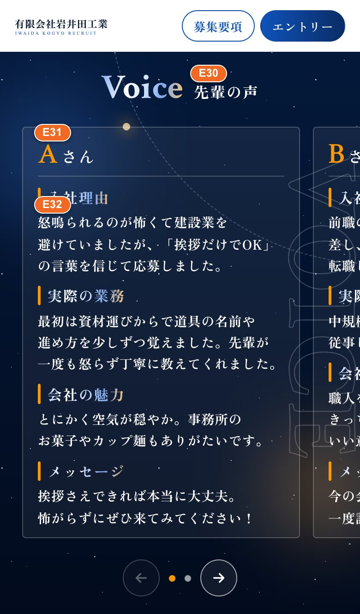
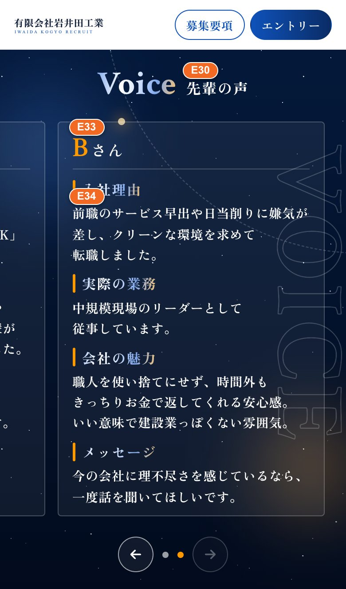
| 番号 | 場所 | 今の文言（冒頭） | 文字数の目安 |
|---|---|---|---|
| E30 | 見出し「先輩の声」上の英字(Voice)は飾りなので変えない | 先輩の声 | 現状4字→13字まで |
| E31 | 1枚目のカード 名前(Aさん)大きな頭文字(class="card__ini")は1字。「さん」は class="card__name" の中 | Aさん | 現状3字→14字まで |
| E32 | 1枚目のカード 4つの答え項目名(dt)を変えるときは2枚のカードでそろえる文を足したら区切りに<wbr> | 怒鳴られるのが怖くて建設業を避けてい… | 入社理由：現状46字→49字まで 実際の業務：現状51字→59字まで 会社の魅力：現状32字のまま メッセージ：現状31字のまま |
| E33 | 2枚目のカード 名前(Bさん)大きな頭文字は1字 | Bさん | 現状3字→15字まで |
| E34 | 2枚目のカード 4つの答えカードの枚数は変えない(増やすときは担当者へ。下の点の数・矢印の動きも変わるため)文を足したら区切りに<wbr> | 前職のサービス早出や日当削りに嫌気が… | 入社理由：現状39字→49字まで 実際の業務：現状21字→安全26字(限界30字) 会社の魅力：現状49字のまま メッセージ：現状31字のまま |
カードは横にスライドします。左が1枚目（Aさん）、右が2枚目（Bさん）の画面です。カードの中の文が長くなると、カードの下が切れます（「限界」が小さいのはそのためです）。
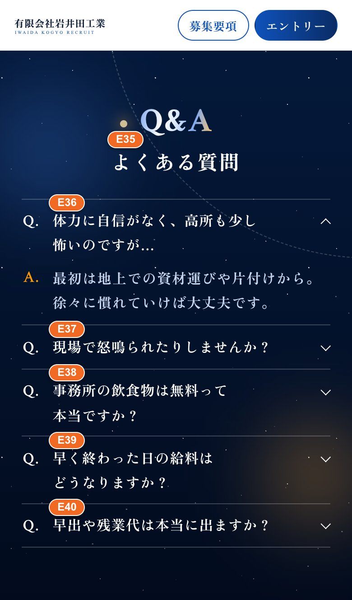
| 番号 | 場所 | 今の文言（冒頭） | 文字数の目安 |
|---|---|---|---|
| E35 | 見出し「よくある質問」上の英字(Q&A)は飾りなので変えない | よくある質問 | 現状6字→安全14字(限界56字) |
| E36 | 質問1と答え1「Q.」「A.」(class="qa__mk")は変えない開くのは1つずつ。答えを開いた状態で測った質問と答えの組の数は変えない(5組で画面がいっぱい) | 体力に自信がなく、高所も少し怖いので… | 質問：現状21字(安全はこのまま・被る心配なし・+60字まで確認) 答え：現状33字→安全36字(被る心配なし・+60字まで確認) |
| E37 | 質問2と答え2「Q.」「A.」(class="qa__mk")は変えない開くのは1つずつ。答えを開いた状態で測った質問と答えの組の数は変えない(5組で画面がいっぱい) | 現場で怒鳴られたりしませんか？／「上… | 質問：現状15字→安全17字(被る心配なし・+60字まで確認) 答え：現状32字→安全33字(被る心配なし・+60字まで確認) |
| E38 | 質問3と答え3「Q.」「A.」(class="qa__mk")は変えない開くのは1つずつ。答えを開いた状態で測った質問と答えの組の数は変えない(5組で画面がいっぱい) | 事務所の飲食物は無料って本当ですか？… | 質問：現状18字→安全21字(被る心配なし・+60字まで確認) 答え：現状35字→安全42字(被る心配なし・+60字まで確認) |
| E39 | 質問4と答え4「Q.」「A.」(class="qa__mk")は変えない開くのは1つずつ。答えを開いた状態で測った質問と答えの組の数は変えない(5組で画面がいっぱい) | 早く終わった日の給料はどうなりますか… | 質問：現状19字→安全21字(被る心配なし・+60字まで確認) 答え：現状29字→安全36字(被る心配なし・+60字まで確認) |
| E40 | 質問5と答え5「Q.」「A.」(class="qa__mk")は変えない開くのは1つずつ。答えを開いた状態で測った質問と答えの組の数は変えない(5組で画面がいっぱい) | 早出や残業代は本当に出ますか？／1分… | 質問：現状15字→安全17字(被る心配なし・+60字まで確認) 答え：現状30字→安全35字(被る心配なし・+60字まで確認) |
質問を押すと答えが開きます。開くのは1つずつです（ほかの答えは閉じます）。文字数は、それぞれの答えを開いた状態で測りました。画面は1つ目を開いた状態です。
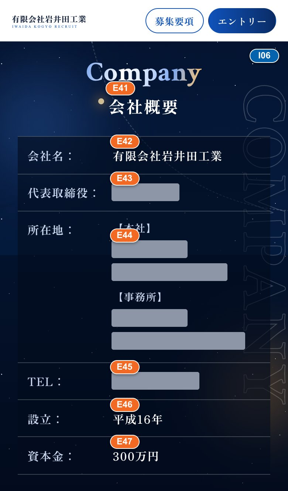
| 番号 | 場所 | 今の文言（冒頭） | 文字数の目安 |
|---|---|---|---|
| E41 | 見出し「会社概要」上の英字(Company)は飾りなので変えない | 会社概要 | 現状4字→安全14字(限界28字) |
| E42 | 会社名項目名(dt)の「：」は残す | 有限会社岩井田工業 | 現状9字→安全11字(限界32字) |
| E43 | 代表取締役 | （代表者名） | 現状6字→安全12字(限界32字) |
| E44 | 所在地(本社・事務所)【本社】【事務所】の見出し(class="prof__h")は残す番地は class="nb" で包んで途中で折れないようにしてある | （本社の所在地）／（事務所の所在地） | 本社の住所：現状17字(安全はこのまま・限界23字) 事務所の住所：現状18字→安全19字(限界39字) |
| E45 | 電話番号番号は class="nb" で包んで途中で折れないようにしてある | （電話番号） | 現状12字→安全16字(限界37字) |
| E46 | 設立 | 平成16年 | 現状5字→安全12字(限界33字) |
| E47 | 資本金 | 300万円 | 現状5字→安全13字(限界33字) |
| 番号 | 場所 | ファイル | 縦横比・サイズ |
|---|---|---|---|
| I06 | 背景の写真(夜明けの足場を暗く敷いたもの) | assets/fv.jpg | 縦長2:3・1024×1536px(元と同じ)・JPG・容量79KB同じファイルが1Pでも使われている(1回の差し替えで全部変わる) |
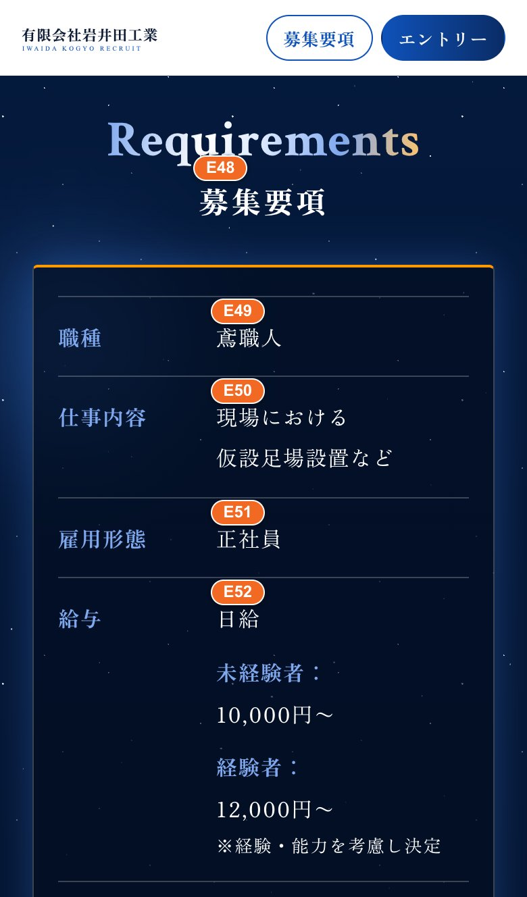
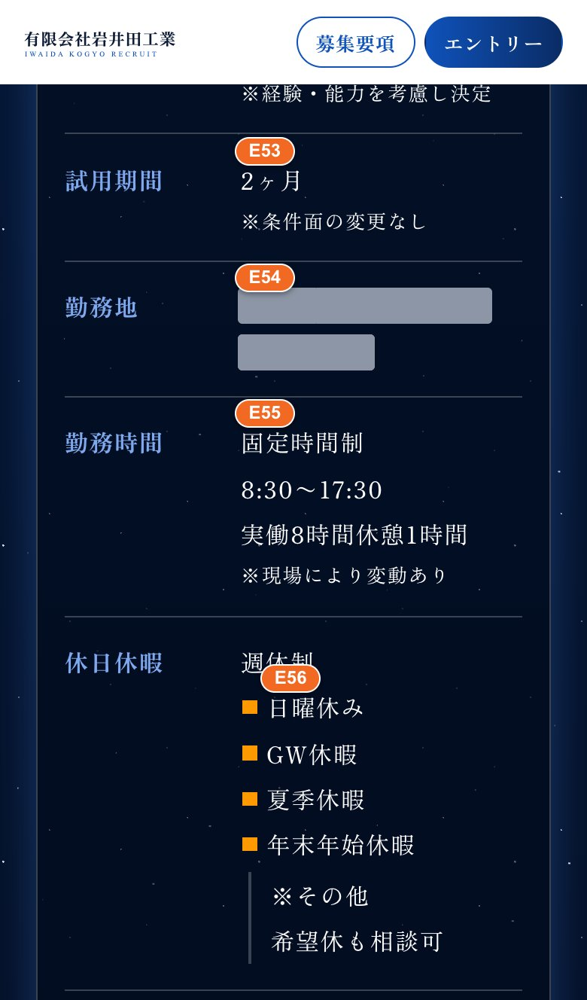
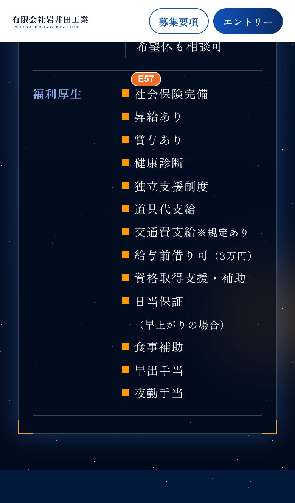
| 番号 | 場所 | 今の文言（冒頭） | 文字数の目安 |
|---|---|---|---|
| E48 | 見出し「募集要項」上の英字(Requirements)は飾りなので変えない | 募集要項 | 現状4字→14字まで |
| E49 | 職種 | 鳶職人 | 現状3字→11字まで |
| E50 | 仕事内容 | 現場における仮設足場設置など | 現状14字→15字まで |
| E51 | 雇用形態 | 正社員 | 現状3字→11字まで |
| E52 | 給与「未経験者：」「経験者：」の見出し(class="req__h")と※の注意書き(class="req__note")は残す | 日給／10,000円〜／12,000… | 1行め(日給)：現状2字→11字まで 2行め(未経験者の金額)：現状8字→13字まで 3行め(経験者の金額)：現状8字→13字まで |
| E53 | 試用期間字数は「2ヶ月」の部分。※の注意書きは class="req__note" の中(字数に含めない) | 2ヶ月※条件面の変更なし | 現状3字→11字まで |
| E54 | 勤務地番地は class="nb" で包んである | （所在地） | 現状17字(これ以上は行が増える・下へ伸びるだけで被りはしない) |
| E55 | 勤務時間※の注意書きは class="req__note" の中 | 固定時間制／8:30〜17:30／実… | 1行め：現状5字→11字まで 2行め：現状10字→15字まで 3行め：現状10字→11字まで |
| E56 | 休日休暇■の付いた項目は1つずつ class="sq" で包んである。増やす時は隣の項目を丸ごとコピーして文だけ変える | 日曜休み／GW休暇／夏季休暇／年末年… | 項目4個｜各項目、1行に収まるのは10字まで(今いちばん長い項目は6字) |
| E57 | 福利厚生■の付いた項目は1つずつ class="sq" で包んである。増やす時は隣の項目を丸ごとコピーして文だけ変える小さな補足は class="sup" の中 | 社会保険完備／昇給あり／賞与あり／健… | 項目13個｜各項目、1行に収まるのは10字まで(今いちばん長い項目は13字) |
募集要項は長いページで、ページの中を下へスクロールします。文が増えてもページが下へ伸びるだけなので、ほかに被ることはありません。目安の字数は「行が増えない字数」です。画面は上から順に3枚です。
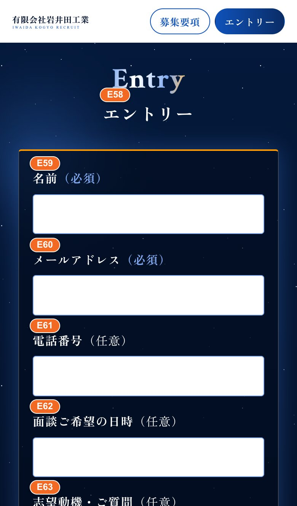
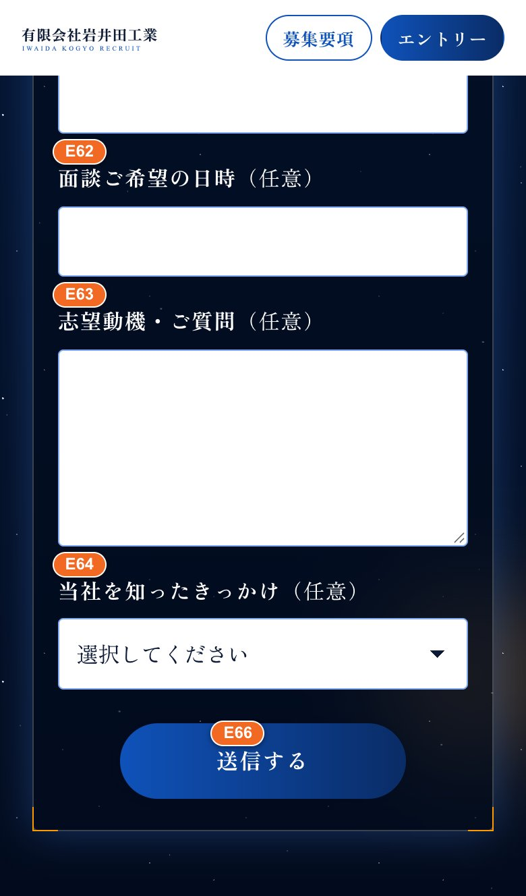
| 番号 | 場所 | 今の文言（冒頭） | 文字数の目安 |
|---|---|---|---|
| E58 | 見出し「エントリー」上の英字(Entry)は飾りなので変えない | エントリー | 現状5字→14字まで |
| E59 | 入力欄の名前「名前」(必須)(任意)の部分(class="field__req"・"field__opt")は残す(字数に含めない)入力欄の名前(name="…")・種類(type="…")は変えない(送信の仕組みとつながっている) | 名前 | 現状2字→14字まで |
| E60 | 入力欄の名前「メールアドレス」(必須)(任意)の部分(class="field__req"・"field__opt")は残す(字数に含めない)入力欄の名前(name="…")・種類(type="…")は変えない(送信の仕組みとつながっている) | メールアドレス | 現状7字→14字まで |
| E61 | 入力欄の名前「電話番号」(必須)(任意)の部分(class="field__req"・"field__opt")は残す(字数に含めない)入力欄の名前(name="…")・種類(type="…")は変えない(送信の仕組みとつながっている) | 電話番号 | 現状4字→14字まで |
| E62 | 入力欄の名前「面談ご希望の日時」(必須)(任意)の部分(class="field__req"・"field__opt")は残す(字数に含めない)入力欄の名前(name="…")・種類(type="…")は変えない(送信の仕組みとつながっている) | 面談ご希望の日時 | 現状8字→14字まで |
| E63 | 入力欄の名前「志望動機・ご質問」(必須)(任意)の部分(class="field__req"・"field__opt")は残す(字数に含めない)入力欄の名前(name="…")・種類(type="…")は変えない(送信の仕組みとつながっている) | 志望動機・ご質問 | 現状8字→14字まで |
| E64 | 入力欄の名前「当社を知ったきっかけ」(必須)(任意)の部分(class="field__req"・"field__opt")は残す(字数に含めない)入力欄の名前(name="…")・種類(type="…")は変えない(送信の仕組みとつながっている) | 当社を知ったきっかけ | 現状10字→14字まで |
| E65 | 「当社を知ったきっかけ」の選択肢選択肢は <option>〜</option> の中の文字。増やす時は1行を丸ごとコピー。先頭の「選択してください」(value="")は残す | 選択してください／知人の紹介／SNS… | 選択肢4つ＋「選択してください」｜実測していない(選択肢は端末の一覧で表示される)。1つ20字以内が目安 |
| E66 | 送信ボタン「送信する」type="submit" は変えない | 送信する | 現状4字→12字まで |
エントリーも長いページです。入力欄の名前の後ろの「（必須）」「（任意）」は字数に含めていません。送信の仕組みは担当者が設定しています（入力欄の name="…" などは変えないでください）。
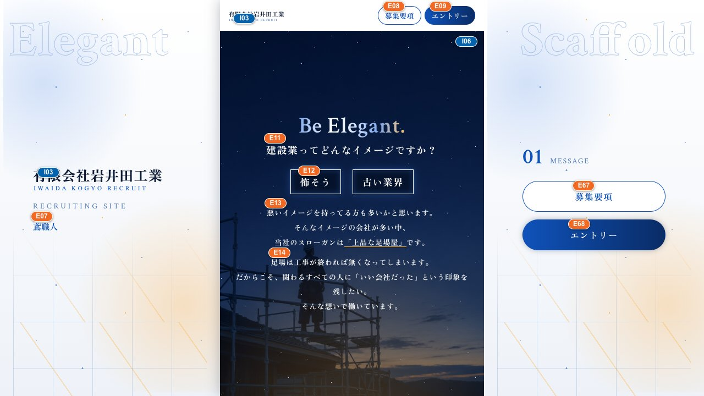
| 番号 | 場所 | 今の文言（冒頭） | 文字数の目安 |
|---|---|---|---|
| E08 | ヘッダー右上のボタン「募集要項」行き先(href="#requirements")は変えない | 募集要項 | 現状4字→安全5字(限界6字) |
| E09 | ヘッダー右上のボタン「エントリー」行き先(href="#entry")は変えない | エントリー | 現状5字→安全6字(限界7字) |
| E07 | PC表示の左側の職種名PCの広い画面だけに出る | 鳶職人 | 現状3字→安全18字(被る心配なし・+60字まで確認)(PCの広い画面で測定) |
| E67 | PC表示の右側のボタン「募集要項」行き先(href)は変えない | 募集要項 | 現状4字→安全14字(被る心配なし・+60字まで確認)(PCの広い画面で測定) |
| E68 | PC表示の右側のボタン「エントリー」行き先(href)は変えない | エントリー | 現状5字→安全14字(被る心配なし・+60字まで確認)(PCの広い画面で測定) |
| 番号 | 場所 | ファイル | 縦横比・サイズ |
|---|---|---|---|
| I03 | ロゴ(ヘッダーの左上) | assets/logo.svg | 横長 5:1・SVG(元は 240×48 の枠に、社名の文字を描いた SVG)・容量1KB未満同じファイルが PC表示の左側でも使われている(1回の差し替えで全部変わる)。PNG や JPG のロゴにしたいときは担当者に相談(ファイル名と拡張子が変わるため)同じファイルがPC表示の左側でも使われている(1回の差し替えで全部変わる) |
| I03 | ロゴ(PC表示の左側) | assets/logo.svg | 横長 5:1・SVG(元は 240×48 の枠に、社名の文字を描いた SVG)・容量1KB未満同じファイルがヘッダーでも使われている(1回の差し替えで全部変わる) |
PCで広い画面にしたときだけ出る左右と、全ページの上に出るヘッダーです。スマホでもヘッダーは同じものが出ます（TOP の画面にも番号を付けています）。
ブラウザのタブや検索結果、LINE・SNSでシェアした時に出る文言と画像です。サイトの画面には出ません。index.html のいちばん上の <head> の中にあります。
| 番号 | 場所 | 今の文言（冒頭） | 文字数の目安 |
|---|---|---|---|
| E01 | ブラウザのタブ名・検索結果の見出し(title)ここを変えたら og:title(E03)も同じ文に | 有限会社岩井田工業｜鳶職人 採用サイ… | 現状19字｜検索結果で切れにくいのは30字前後まで(一般的な目安・実測ではない) |
| E02 | 検索結果の説明文(description)ここを変えたら og:description(E04)も同じ文に | 有限会社岩井田工業 採用サイト。愛知… | 現状35字｜検索結果で切れにくいのは120字前後まで(一般的な目安・実測ではない) |
| E03 | OGP タイトル(LINE・SNSでシェアした時の見出し) | 有限会社岩井田工業｜鳶職人 採用サイ… | 現状19字｜シェア時に切れにくいのは40字前後まで(一般的な目安・実測ではない) |
| E04 | OGP 説明文(シェアした時の説明) | 有限会社岩井田工業 採用サイト。愛知… | 現状35字｜シェア時に切れにくいのは100字前後まで(一般的な目安・実測ではない) |
| E05 | OGP URL(公開するアドレス)公開先のアドレスが変わったら、og:image と twitter:image の https://〜 の頭も同じアドレスに | https://iwaida-rec… | https:// から始まる公開アドレス。文字数の制限なし |
| E06 | OGP サイト名(シェア時のサイト名)社名が変わったらここも | 有限会社岩井田工業 採用サイト | 現状15字｜シェア画面の表示。現状の長さまでを目安に(実測ではない) |
| 番号 | 場所 | ファイル | 縦横比・サイズ |
|---|---|---|---|
| I01 | OGP画像(LINE・SNSでシェアした時の画像) | assets/ogp.jpg | 横長 約1.9:1・1200×630px(元と同じ。シェア用画像で一般的な大きさ)・JPG・容量111KBog:image と twitter:image の2か所で同じファイルを指している。ファイルは同じ名前で上書きするのが簡単 |
| I02 | タブのアイコン(ファビコン)・スマホのホーム画面のアイコン | assets/favicon.icoassets/favicon-32.pngassets/apple-touch-icon.png | 正方形1:1・3つのファイル(favicon.ico 複数サイズ入り／favicon-32.png 32×32px・背景が透明なPNG／apple-touch-icon.png 180×180px・PNG)・容量3KB／1KB未満／3KB3つとも同じ絵柄で、同じファイル名・同じ大きさで上書き。作り直しは担当者に相談がおすすめ |
< と > で囲まれた部分や、class="…" の中身は、見た目や動きを決める部品です。消したり直したりすると、文字が出なくなったり、レイアウトが崩れたりします。<span class="ln">）を増やさない・減らさない。改行したいときは <br> です。<wbr>）と、改行しない囲み（class="nb"）を消さない。消すと、言葉の途中で折れたり、画面の右にはみ出したりします。class="slogan"・class="perk__em" など）や、番号の札（I・II、01〜03、Q.・A.）を消さない。<!-- 〜 -->）を消さない。消すと、次に探せなくなります。style.css・tokens.css・base.css・swipe.js・site.js は開かない・直さないでください。このサイトは、ページの送り方と、文字や写真の出方に決まった動きがあります。次の所は、文言を直すときもそのまま残してください。
<section class="page …" id="…">）を増やす・減らす・順番を変える・id を変えることはしないでください。ヘッダーとPC表示のボタン（募集要項・エントリー）の行き先（href="#requirements"・href="#entry"）とつながっています。class="… rv" の rv です。rv を消す・ほかの所に足すと、出る順番や出方が変わります。aria-hidden="true" の付いた要素で描いています。中身が空に見えても、消さないでください。<details class="qa__item rv" name="qa">。最初の1つだけ open）は変えないでください。カードや質問の数を変えるときは担当者にご相談ください。<span class="page__end"> を消さない。長いページのいちばん下で止まるための印です。直したページで、次を確認してください。
index.html をChromeで開く。実際のスマホで見るときは、担当者に修正後のフォルダを渡してください。